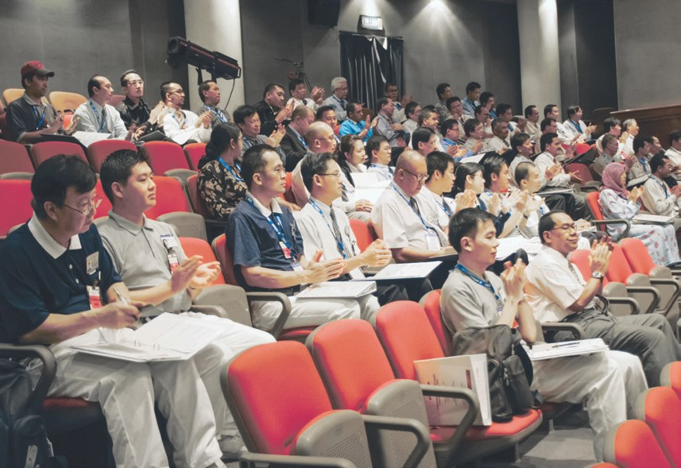
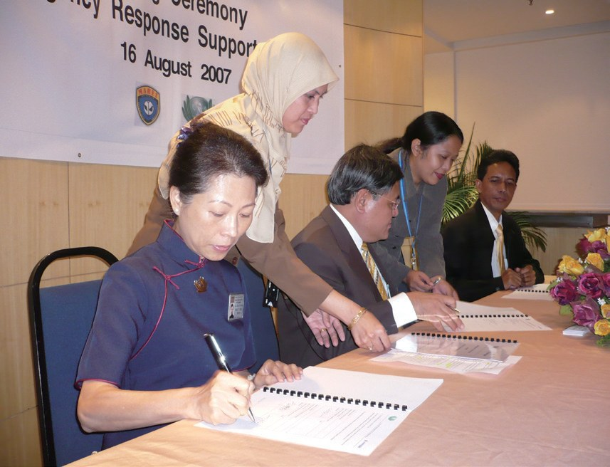
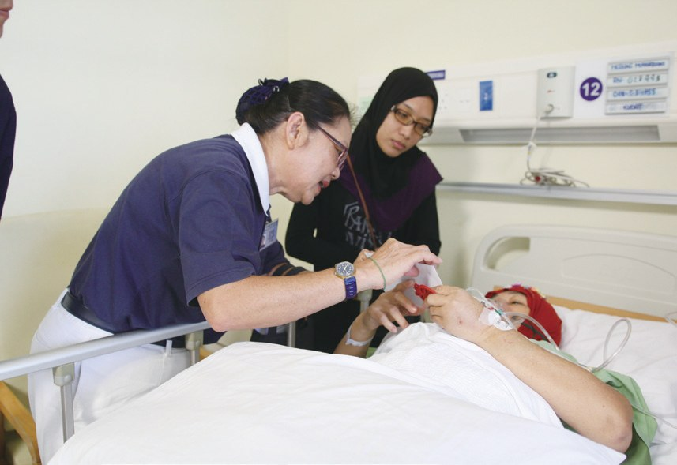
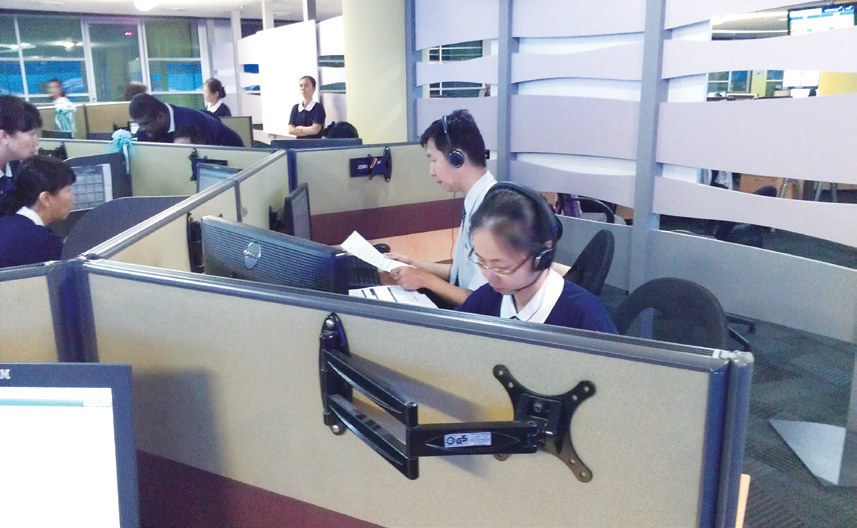
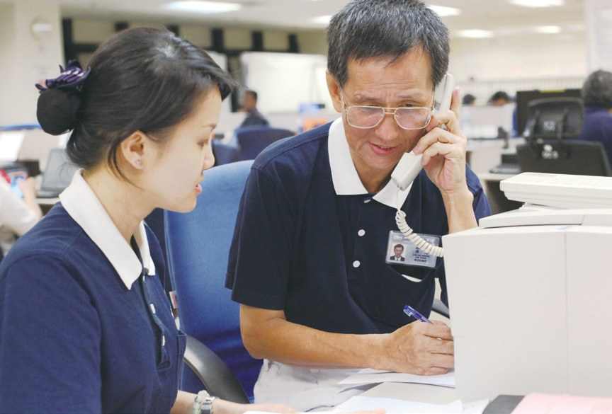
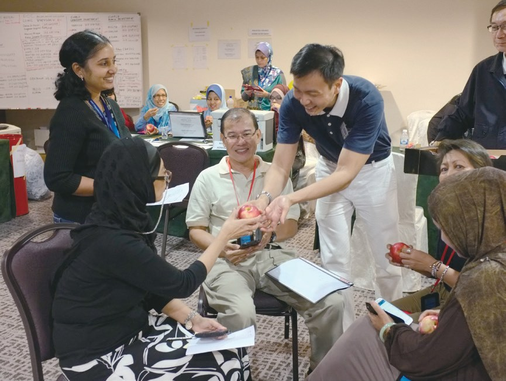
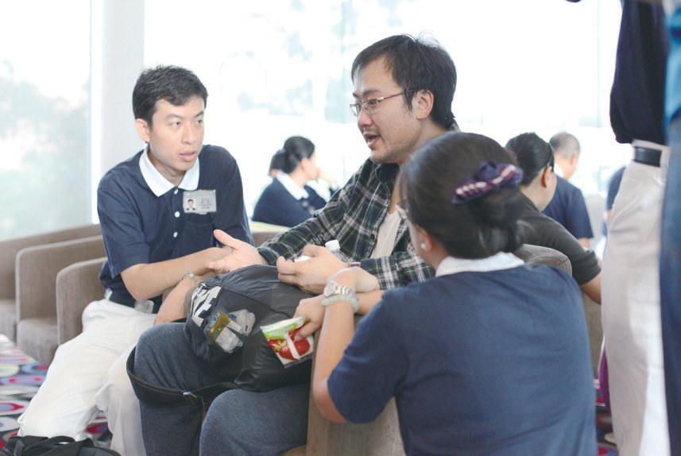
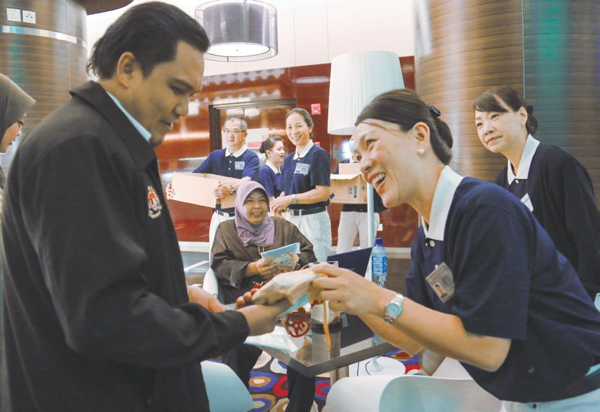
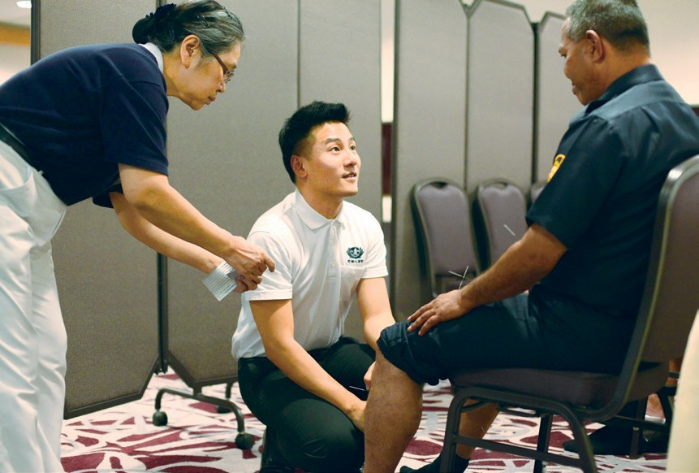
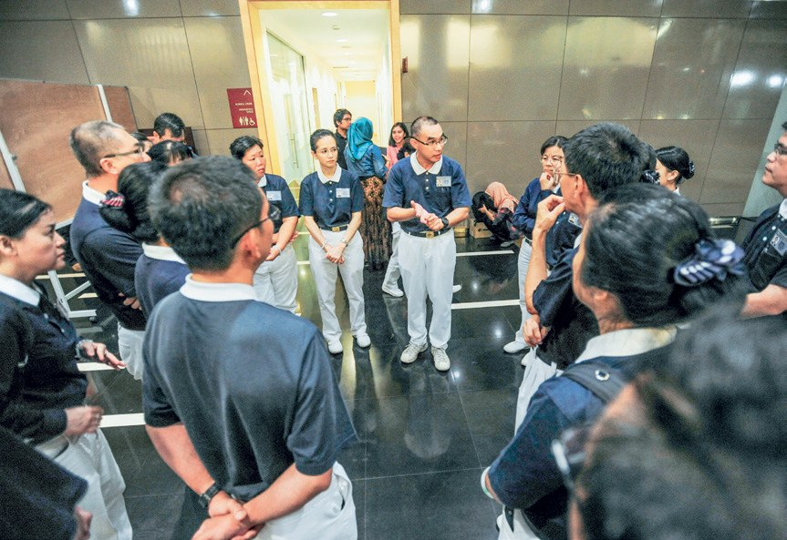

即時動員
發揮良能
家屬等不到消息，志工能做什麼？

先別急著下結論，讀完再說說你的想法～
這一篇講慈濟和馬來西亞航空公司（馬航）的合作：從簽下備忘錄、參加培訓，到2013年至2014年短短一年裡的三起空難。
你會看到志工怎樣守著電話、陪著家屬，連馬航員工都把他們當成依靠。
下面是原書的節錄，紅色底線是我們替你標出的轉折點。
讀之前：陪伴一個傷心的人，你覺得最重要的是什麼？
為什麼找慈濟？
馬航已經跟好幾個團體合作，為什麼還要邀請慈濟？閱讀引導
臺灣慈濟基金會曾多次參與空難後援工作，如1998年大園空難、2002年澎湖空難與2004年新航空難等，讓馬航客戶資訊管理部經理黃書萍印象深刻

基於馬航客戶大部分來自亞洲，且以華裔居多，而員工多為馬來裔，不諳中文，無法順利溝通及提供協助，因此邀請慈濟成為合作夥伴。

員工多是馬來裔……

備忘錄內容包括慈濟提供家屬關懷、語言翻譯、電話諮詢、素食餐點及助念，馬航則需提供相關緊急空難援助培訓課程
馬航出課程培訓！
2016年馬航更新與慈濟的合作備忘錄……馬航願提供免費倉運急難救援物資，以及優先提供賑災前線團隊機位
自簽約以來，慈濟主要配合參與馬航所提供的急難救助專業培訓及模擬訓練，直至2013年10月，馬航於國內外連續發生數起空難事件，慈濟人啟動關懷服務。

真的要上場了……
從沙巴陪到吉隆坡
簽約以來第一次真正的行動。閱讀引導
2013年10月10日下午兩點五十分，隸屬馬航的飛翼航空（Maswings）MH3002十九人座客機於沙巴州古達鎮（Kudat）墜毀，造成兩人身亡，十四人輕重傷。

12日清晨，罹難者遺體運回吉隆坡，志工葉耘韶（濟璟）隨行陪伴家屬。抵達吉隆坡後，轉由雪隆志工接力關懷，致贈慰問金並協助處理喪事、助念。

吉隆坡的志工接手。
「希望將善款轉捐給更需要的人，很感恩有這麼好的團體，一路從沙巴陪伴到吉隆坡。」
罹難者家屬感恩的說・p.206此次慈濟共發放五千令吉，兩地志工動員123人次。
守在電話前
飛機不見了。家屬打電話來，志工接起來。閱讀引導
2014年3月8日，從吉隆坡飛往北京的馬航MH370客機，於凌晨起飛後，不久後便失聯，機上共有227名乘客與12名機組人員。

飛機就這樣失聯了……
在機場電話服務中心，志工二十四小時輪班守在電話前，接聽家屬詢問電話。不論家屬是傷心哭泣還是焦躁質問，志工皆抱持同理心給予回答和解釋。

負責諮詢服務的林亞章（濟元）第一天徹夜未眠，他表示家屬等了那麼久都沒消息，心情一定很不安，所以講電話時都會語氣溫和、不辯駁，只能盡量安撫對方的心。
因為他們一定很不安。

有些沉默無語，對人不理睬，靜坐一隅。遇到這種情況，慈濟志工黃寶英無聲陪伴，藉由傾聽減輕家屬的傷痛。
來自中國的余女士，當聽到夫婿在失聯的機上，趕來吉隆坡瞭解情況。開始時，一直悲傷流淚，不接受志工的關懷。志工們耐心地陪伴在她的身邊，一句話也沒說，等她情緒穩定，才與她交談。
就陪在她身邊……
就在她最困難的時刻，有慈濟人的陪伴，讓她感覺如有親人可以依靠。

猜一猜閱讀引導
分會緊急準備了兩百份「關懷包」送給家屬。你猜裡面有什麼？
同一條船上的戰友
大部分家屬在北京，馬航員工又不會說中文。閱讀引導
當天下午五點，十五位慈濟志工連同七十八位馬航志工所組成的團隊，飛往北京進行後續協調援助工作
派遣北京的馬航員工，大部分是馬來人和印度人，不諳中文；志工適時用中英語為雙方提供翻譯服務，同時陪伴家屬處理日常所需，如手機充電、茶水點心等。
志工也幫忙了！
乘客家屬對慈濟志工的態度，從一開始的不瞭解、不信任，後來遇到任何問題都找慈濟人幫忙。

由於該班航班機票是她選擇的，李太太十分內疚，自責不已。志工趨前關懷，遞上熱飲，緊握她的手，安撫情緒。
她一直怪自己……
如今夫妻相見，有了家人陪伴，多日來的情緒也日漸穩定，因為他知道，他不會是一個人。

「……慈濟人的關懷與陪伴，讓我非常感動，而且不僅關心家屬，甚至適時解除或緩衝馬航和家屬之間的矛盾，是馬航職員可以依靠的臂彎。」
馬航前空服人員周長溎表示・p.213雙方的關係就好像是同一條船上的「戰友」，從互不相識到共同面對、解決大小事務，最後建立起豐厚的情誼和默契，就像是一家人。
變成一家人！

3月24日，馬來西亞首相納吉（Dato Sri Najib）召開緊急記者會，正式宣布3月8日失聯的馬航MH370在印度洋南部海域墜機。聽聞噩耗的家屬痛哭失聲，志工一接獲消息，隨即趕往飯店待命
- 76人次中醫針灸、推拿p.210
- 七場「愛與關懷祝福會」p.210
- 692人次志工投入急難行列p.215
小人物能做大事
四個月後，又一架飛機出事了。閱讀引導
MH17客機從荷蘭阿姆斯特丹起飛後，晚間10時15分，在烏克蘭與俄羅斯邊界上空遭導彈擊毀，機上298人無一生還。
經過MH370事件，慈濟已建立一批志工儲備名單。當日即動員第一批三十位志工趕往家屬下榻的飯店
當天就動員了。
此事故與MH370空難不同，家屬早已得悉飛機墜毀及機上人員全數罹難。他們向馬航職員瞭解實際情況後，便直接回飯店休息，所以志工也不便過度打擾。
什麼時候該退。
《星洲日報》報導，這群身穿深藍色制服的志工，已成為失聯乘客家屬在此特殊時期的定心丸。

雖然大部分都是不起眼的小人物，但是小人物能做大事，長年累月鋪展出康莊菩提道。
上人感恩地說・p.217停一停：誰讓你記住了？閱讀引導
選一位你印象最深的人。沒有標準答案。
有人守電話，有人無聲陪伴，有人從沙巴陪到吉隆坡。哪一位讓你最有感覺？

一起回頭看看吧～
回望
依本章原文整理，每一條都標了原書頁碼。閱讀引導
背後原因
為什麼馬航第一時間找慈濟

小川飛機一出事，馬航為什麼立刻打電話給慈濟？
- 語言不通
員工多為馬來裔，不諳中文。p.204
- 簽備忘錄、受培訓
慈濟配合參與急難救助專業培訓及模擬訓練。p.205
- 長年真誠付出
上人說，因為慈濟人長年累月在當地真誠付出。p.217
後續發展
與馬航一路走來

小禾從第一次交流，到協議更新至2026年？
- 2003
參加馬航訓練學院的交流會。p.203
- 2007
簽署「緊急應對援助諒解備忘錄」。p.204
- 2013
古達墜機，簽約後首次關懷行動。p.205
- 2014
MH370失聯、MH17遭擊落。p.207、p.215
- 2016
更新備忘錄，免費運送賑災物資。p.205
- 2021
馬航主動提出更新協議至2026年。p.205
一次陪伴
照顧了誰
小川志工在空難中，陪伴了哪些人？
- 第一圈家屬
余女士感覺如有親人可以依靠。p.210
- 第二圈馬航員工
志工們成了馬航員工最信賴的依靠。p.212
- 第三圈疲累的人
中醫團隊針灸及推拿，惠及76人次。p.210
- 第四圈社會
立即發揮穩定社會的力量。p.218
以上只整理本章寫到的事；書裡沒寫到的，我們不替它下結論。
回頭看讀前的選擇閱讀引導
黃寶英無聲陪伴，藉由傾聽減輕家屬的傷痛（p.209）；北京的志工幫家屬翻譯、登記、手機充電（p.211）。說話、陪著、辦事，你現在怎麼想？
為什麼余女士反而覺得有親人可以依靠？
只有你自己看得到喔！
準備好了就一起出發～